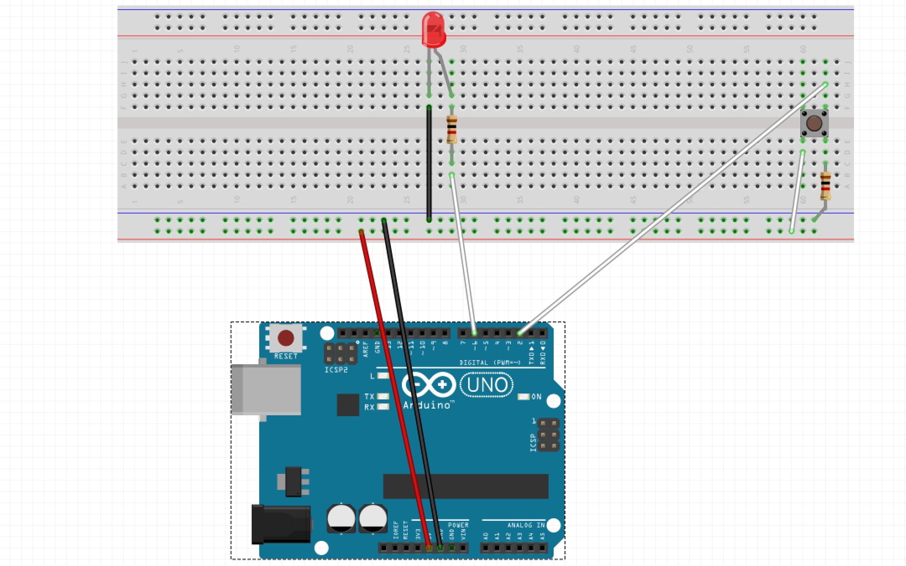
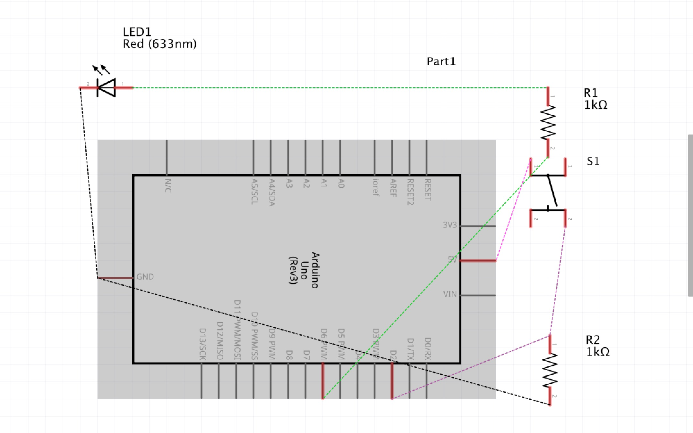
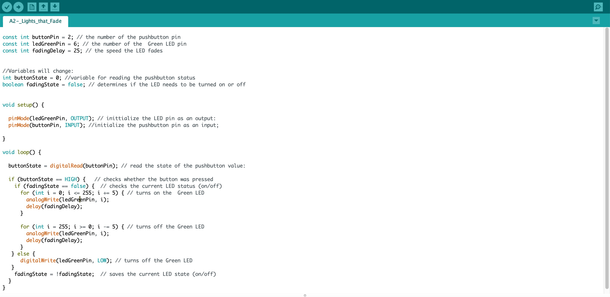

Assignment 2: Lights that Fade!
The prompt was to create a schematic, circuit, and code that uses LEDs, a button, a for-loop, digitalWrite(), digitalRead(), and analogWrite(). Check out my work down below!

The prompt was to create a schematic, circuit, and code that uses LEDs, a button, a for-loop, digitalWrite(), digitalRead(), and analogWrite(). Check out my work down below!
Through my circuit I used 1k ohm resistors because it worked as the safest set of resistors with the LED lights. As you mentioned in class, 1k ohm resistors works best with green, red and yellow LED lights. While I used a green LED light, I took the advice given in class and chose to use a 1k ohm resistor.
 
V = 5 - 1.8(V drop) = 3.2v
3.2 = 0.02 X R(ohms)
R = 3.2/0.02 = 160 (ohms)
